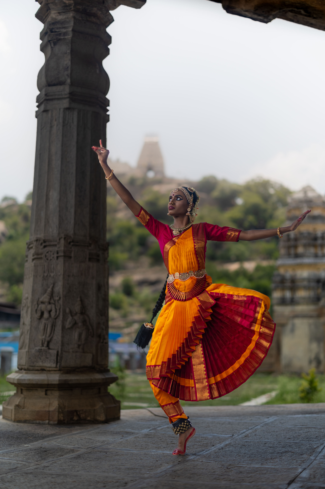

Angika
Expression through the body: posture, limbs, eyes and overall physicality. In Bharatanatyam, angika is carefully codified, from the stance of the feet to the tilt of the head.
Concepts & Grammar
Beneath each movement of Bharatanatyam lies a rich theoretical universe — of sacred texts, aesthetic principles and ways of communicating emotion. This page maps the ideas that shape the dance.
Images that illustrate the philosophical and structural ideas behind Bharatanatyam.

The text that established the grammar of drama, dance and music.

The emotional core that underpins every Bharatanatyam performance.

The dance qualities of grace and power in classical performance.
The Natya Shastra, attributed to the sage Bharata, is a foundational Sanskrit treatise on drama, dance and music, compiled between roughly 200 BCE and 200 CE. It is not a narrow rulebook, but an encyclopaedic guide that weaves mythology, philosophy and detailed technique into a single vision of the performing arts.
For Bharatanatyam, the text offers core ideas about body positions, hand gestures, facial expressions, stagecraft and musical structure. Many modern lineages may not follow it verbatim, yet its concepts continue to inform how dancers and teachers think about “correct” form and expressive intent.
Bhava refers to the internal emotional state or intention of a character. In Bharatanatyam, dancers cultivate bhava through imagination, memory and sensitivity to poetry, allowing them to “become” the devotee, friend or deity they portray.
Rasa is the aesthetic flavour experienced by the audience — a refined emotional mood such as love, courage, peace or wonder. While the dancer generates bhava, it is the viewer who savours rasa, completing the artistic circuit between stage and spectator.
Abhinaya is the craft of transmitting these inner states outward, through eyes, eyebrows, breath, stance, hands and timing. In Bharatanatyam, abhinaya turns narrative and poetry into living, felt experience rather than mere storytelling.
Tandava is associated with Lord Shiva’s powerful, rhythmic and sometimes fierce dance — dynamic, sculptural and charged with energy. Its qualities appear in strong footwork, expansive lines and bold rhythmic patterns.
Lasya is linked to the graceful, fluid and gentle aspects of movement, traditionally associated with Parvati. It reveals itself in curving torso work, soft glances and delicate transitions between poses.
In practice, Bharatanatyam weaves both impulses together — strength and softness, precision and yielding — allowing a single piece to move between tandava-like vigour and lasya-like tenderness.
Expression through the body: posture, limbs, eyes and overall physicality. In Bharatanatyam, angika is carefully codified, from the stance of the feet to the tilt of the head.
Expression through speech and sound: lyrics, recitation and rhythmic syllables. Even when a dancer is silent, the vocal support of the singer and nattuvanar shapes the emotional landscape.
Expression through costume, jewellery, makeup and stage design. The Bharatanatyam costume turns the dancer into a visual icon, amplifying every line and gesture.
Expression through inner, involuntary signs of emotion: trembling, tears, change of complexion and breath. Satvika abhinaya arises when the dancer’s inner experience is fully aligned with the role.